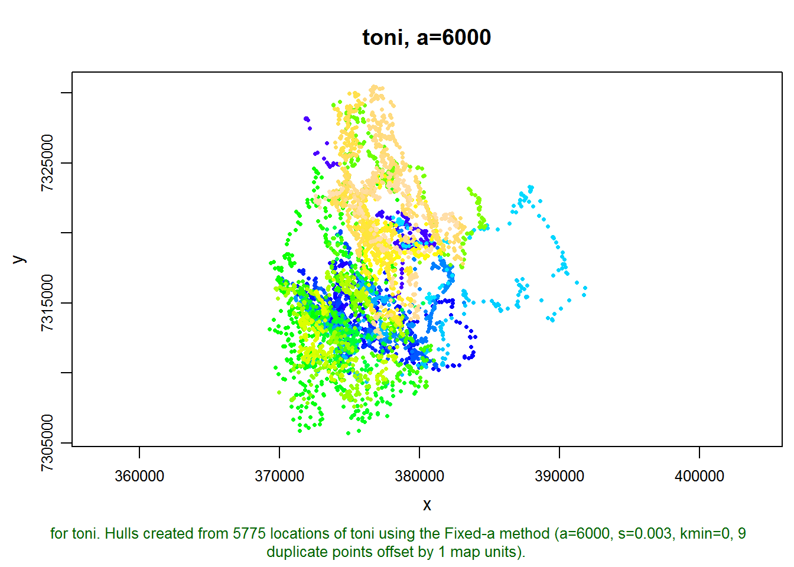
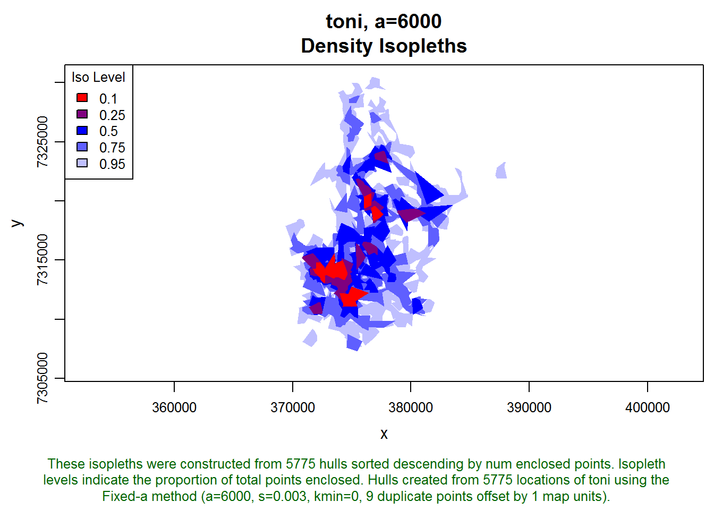
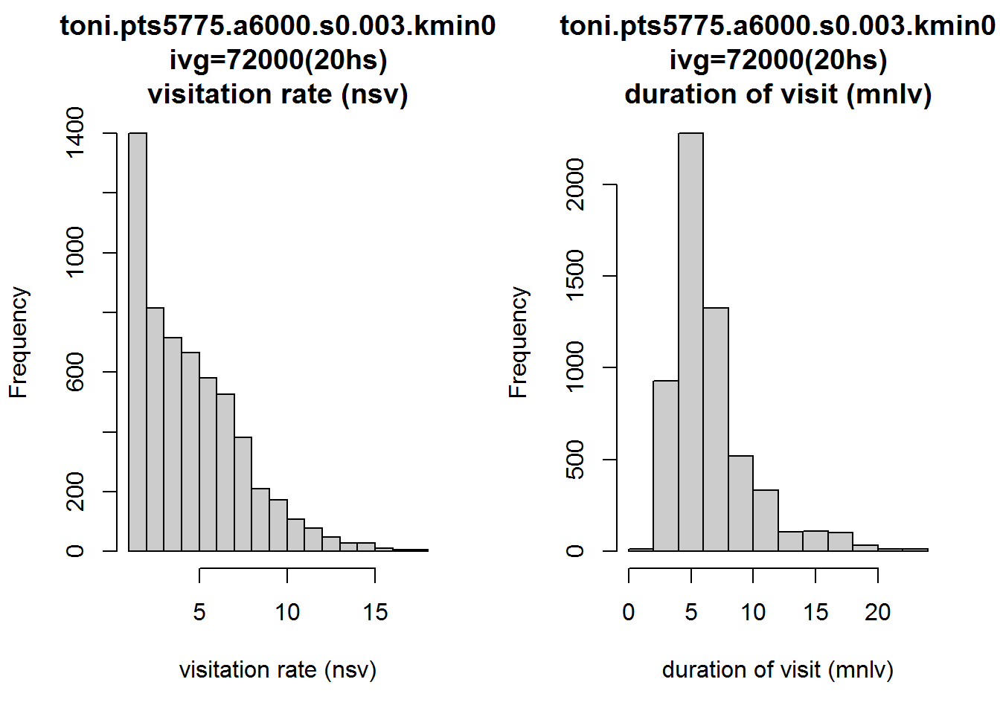
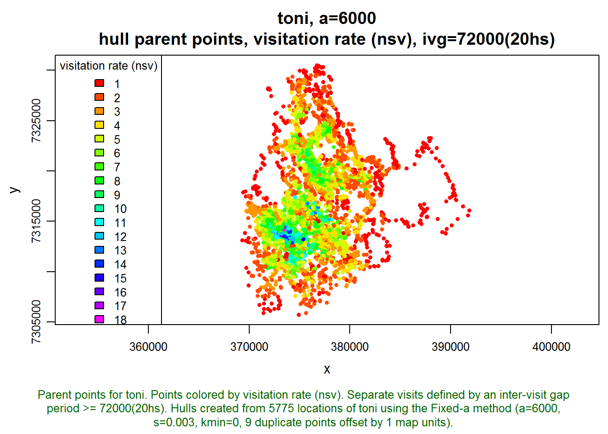
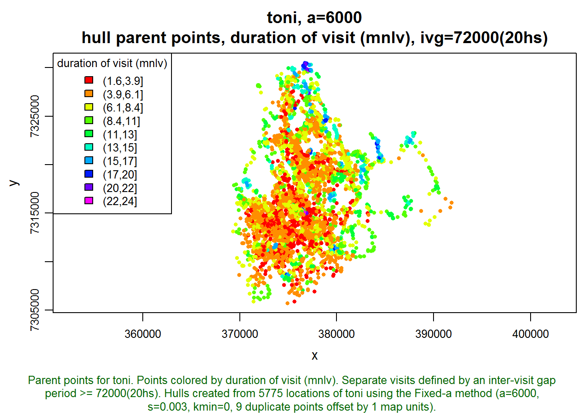
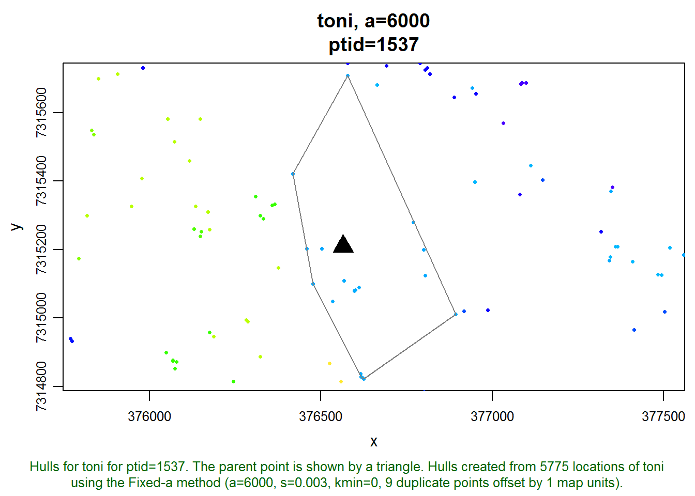
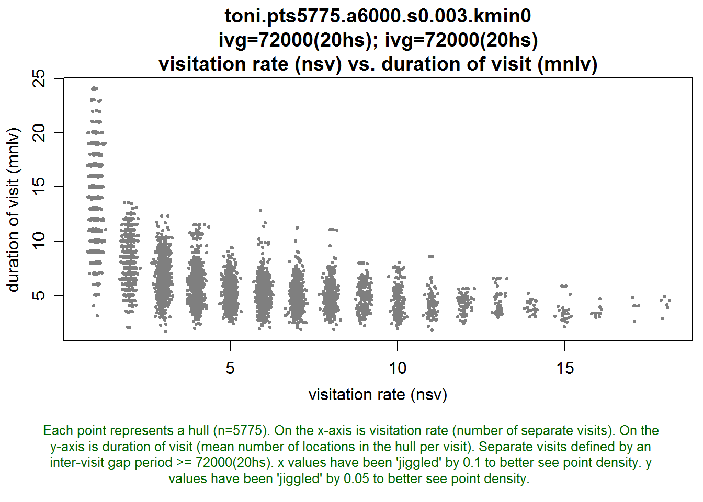
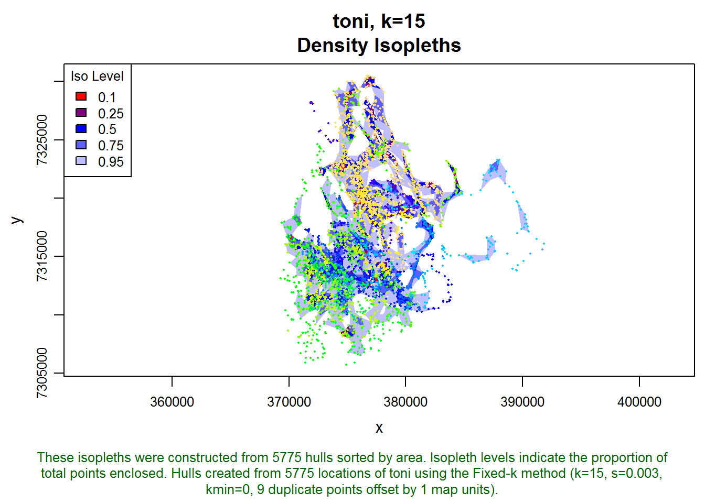
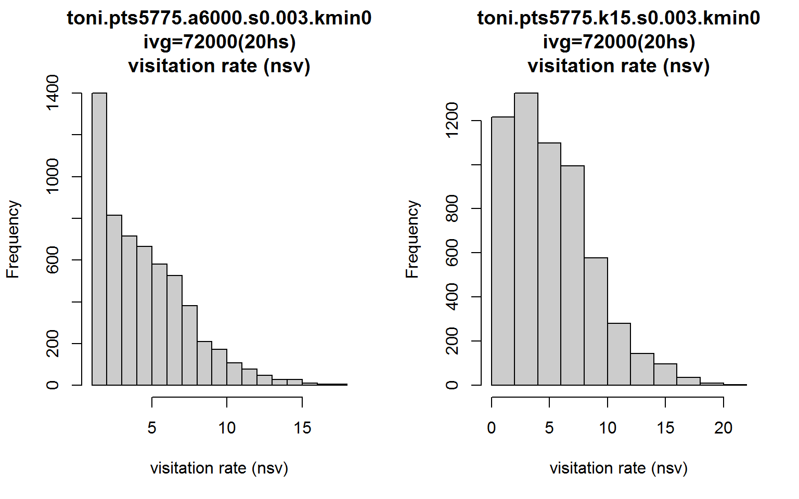
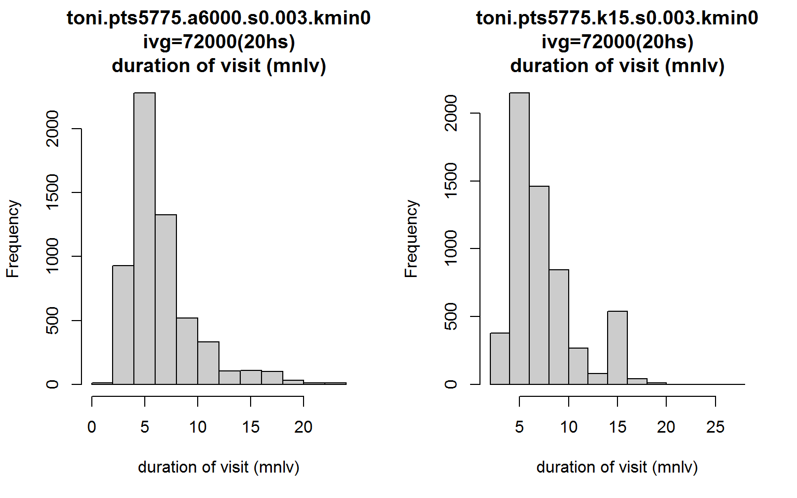

This T-LoCoH tip illustrates how you can explore the distribution of time-use metrics, and examine the time use metrics for a specific hull. The example demonstrates how to use functions from the T-LoCoH package, as well as ‘drill down’ into the data structure of a locoh-hullset.
The R code used in this tip can be found here.
In T-LoCoH, some of the most interesting hull metrics are the measures of time use, which include the number of separate visits (a measure of revisitation), and the mean number of locations per visit (a measure of the duration of visits). These metrics can help reveal spatial patterns in time strategies, for example where the animal returns to frequently, and where it tends to hand out for long periods of time. These patterns often map on to different behavior strategies, such as territoriality or resource optimization.
Caveat #1: One should note that “number of separate visits” and “mean number of locations per visit” will only be valid measures of time use if location sampling was fairly regular (i.e., positions were recorded at a fairly regular time interval). If sampling was opportunistic (e.g., manually collected radio telemetry data), then the number of separate visits in a hull could very well be more of a reflection of when sampling occurred than the behavior of the animal. T-LoCoH will not prevent you from computing time-use metrics, nor will it give you a warning, but these values will not be a good representation of behavior.
Interpreting Time Use Metrics
Although a seasoned field biologist may not be surprised to see where an animal returned to frequently, the values of time-use metrics are not always intuitive or easy to interpret. The values of nsv and mnlv will depend on the intervisit gap (ivg) value that defines separate visits, as well as the geometry of the hulls – which in turn depends on the value of ‘s’ and either ‘a’ or ‘k’.
Caveat #2: If time is included in nearest neighbor selection (s > 0), it is generally better to construct hulls with the adaptive ‘a’ method, as opposed to the fixed-k method, for time-use analysis. The reasons for this are discussed below.
The general advice for doing time-use analysis with T-LoCoH is to begin by selecting values of ‘s’ and ‘a’ that do a reasonable job in modeling the space use of the animal (i.e., minimizes both fake ‘holes’ in core areas and ‘spurious cross overs’). These hull then become the cookie cutters from which you compute time use metrics using an intervisit gap period based on knowledge of the animal’s behavior and/or research question1.
In the examples below, we will learn how to explore the distribution of nsv and mnlv, as well as examine the metrics for individual hulls. This example assumes we have already constructed a set of hulls that we’re happy with.
Let’s begin by loading a hullset for toni the buffalo. If you don’t have the T-LoCoH package for R installed, you can get it from (http://tlocoh.r-forge.r-project.org/)
require(tlocoh)## Loading required package: tlocoh
## Loading required package: sp
## T-LoCoH for R (version 1.18)
## URL: http://tlocoh.r-forge.r-project.org/Download the hullset for toni:
mycon <- url("http://tlocoh.r-forge.r-project.org/toni.n5775.s0.003.a6000.lhs.01.RData")
load(mycon); close(mycon)
summary(toni.lhs)## Summary of LoCoH-hullset object: toni.lhs
## Created by: T-LoCoH 1.18
## [1] toni.pts5775.a6000.s0.003.kmin0
## id: toni
## pts: 5775
## dates: 2005-08-23 08:35:00 SAST to 2006-04-23 15:09:00 SAST
## movement: tau=3600 (1hs), vmax=0.9268, d.bar=173.7
## hulls: 5775
## dups: 9 (offset by 1 map unit)
## mode: a=6000, kmin=0, s=0.003
## metrics: area, nep, nnn, perim, scg.enc.mean, scg.enc.sd,
## scg.nn.mean, scg.nn.sd, tspan
## isos: -none-
## other: -none-
## created: Tue Sep 09 15:00:05 2014We can see that this hullset was created with s=0.003, meaning the hulls are “local” in both time and space. We also see the hulls were constructed from nearest neighbors selected using the adaptive method (a=6000 meters), which helps to reduce the size of hulls in outlying areas. Let’s plot the points:
plot(toni.lhs, allpts=TRUE)
This hullset doesn’t yet have isopleths, which is a good way to evaluate if our parameter values are in the right ball pack. Let’s go ahead and add some density isopleths.
toni.lhs <- lhs.iso.add(toni.lhs, status=FALSE)
plot(toni.lhs, iso=TRUE)
These isopleths look reasonable. Let’s move on to creating some time use metrics. We haven’t articulated a study question yet, but let’s assume that if toni is away from an area for 24 hours, then we want her next occurrence in that area to count as a separate visit. Let’s reduce that a bit, say to 20 hours, to account for some variation in revisitation time (i.e., a location at 2pm on day one and 11 am the following day are only 21 hours apart but in terms of behavior should probably be considered two visits).
We create the time-use metrics using the lhs.visit.add function with an intervisit gap value of 20 hours (expressed in seconds):
toni.lhs <- lhs.visit.add(toni.lhs, ivg=3600*20)## toni.pts5775.a6000.s0.003.kmin0
## 1 of 1. Computing the number of visits in each hull for ivg=72000 (20hs)Let’s look at the distribution of nsv and mnlv. The histogram function for a Locoh-hullset has an argument metric where you can specify which hull metric you want plotted on the histogram:
par(mfrow=c(1,2))
hist(toni.lhs, lo.margins.set=FALSE, metric="nsv")
hist(toni.lhs, lo.margins.set=FALSE, metric="mnlv")
Interesting. Let’s also look at how these two metrics appear on the landscape. Note below how we tell the plot function we want it to display the hull parent points, classified by the nsv hull metric, and colored with a rainbow color ramp (as opposed to the default grayscale). hpp.classify.chop=0 tells it to show all values and not truncate any outliers in the tails.
plot(toni.lhs, hpp=T, hpp.classify="nsv", hpp.classify.chop=0, col.ramp="rainbow")
The areas with the highest rates of revisitation seem to coincide with the areas of highest density, which is intuitive. There must be some kind of important resource here that toni keeps coming back to. Let’s look at how long toni stays in each area:
plot(toni.lhs, hpp=T, hpp.classify="mnlv", hpp.classify.chop=0, col.ramp="rainbow")
Those hulls where mnlv=24 seem a little sketchy. The sampling interval is every hour, and it seems very unlikely that toni remained in the same location for 24 hours. Let’s investigate this by looking at one of these hulls where mnlv=24.
This part of the exercise requires knowing a little bit about data structure. Fortunately there is a vignette that describes the data structure of a Locoh-hullset. Without drilling down very far, we see that a Locoh-hullset object is essentially a list. Our hullset object has only one set of hulls (i.e. a=6000). Let’s see what’s in the hulls element:
class(toni.lhs[[1]]$hulls)## [1] "SpatialPolygonsDataFrame"
## attr(,"package")
## [1] "sp"names(toni.lhs[[1]]$hulls@data)## [1] "pts.idx" "ptid" "nnn" "area"
## [5] "perim" "tspan" "nep" "scg.enc.mean"
## [9] "scg.enc.sd" "scg.nn.mean" "scg.nn.sd" "nsv.72000"
## [13] "mnlv.72000"It looks like the hulls element contains the individual hulls and all of the hull metrics in the attached data frame (aka attribute table). Let’s look at the first few rows:
head(toni.lhs[[1]]$hulls@data)## pts.idx ptid nnn area perim tspan nep scg.enc.mean scg.enc.sd
## 1 1 1 5 580855 3574 12.000 5 0.1016 0.07027
## 2 2 2 9 388380 4765 8.017 9 0.1022 0.16710
## 3 3 3 9 388380 4765 8.017 9 0.1022 0.16710
## 4 4 4 9 388380 4765 8.017 9 0.1022 0.16710
## 5 5 5 9 388380 4765 8.017 9 0.1022 0.16710
## 6 6 6 9 388380 4765 8.017 9 0.1022 0.16710
## scg.nn.mean scg.nn.sd nsv.72000 mnlv.72000
## 1 0.1016 0.07027 1 5
## 2 0.1022 0.16710 1 9
## 3 0.1022 0.16710 1 9
## 4 0.1022 0.16710 1 9
## 5 0.1022 0.16710 1 9
## 6 0.1022 0.16710 1 9We’re going to be working with this data frame, so lets save ourselves a little typing by making a copy of it.
hm <- toni.lhs[[1]]$hulls@data
head(hm)## pts.idx ptid nnn area perim tspan nep scg.enc.mean scg.enc.sd
## 1 1 1 5 580855 3574 12.000 5 0.1016 0.07027
## 2 2 2 9 388380 4765 8.017 9 0.1022 0.16710
## 3 3 3 9 388380 4765 8.017 9 0.1022 0.16710
## 4 4 4 9 388380 4765 8.017 9 0.1022 0.16710
## 5 5 5 9 388380 4765 8.017 9 0.1022 0.16710
## 6 6 6 9 388380 4765 8.017 9 0.1022 0.16710
## scg.nn.mean scg.nn.sd nsv.72000 mnlv.72000
## 1 0.1016 0.07027 1 5
## 2 0.1022 0.16710 1 9
## 3 0.1022 0.16710 1 9
## 4 0.1022 0.16710 1 9
## 5 0.1022 0.16710 1 9
## 6 0.1022 0.16710 1 9Next, lets get the ptid (point-id) for one of the hulls where mnlv=24. We can sort the column that contains the mnlv hull metric and pick a hull that has one of the top values:
head(hm[order(hm$mnlv.72000, decreasing=T),])## pts.idx ptid nnn area perim tspan nep scg.enc.mean scg.enc.sd
## 1537 1537 1537 24 217324 2064 35 24 0.03986 0.06348
## 1538 1538 1538 24 217324 2064 35 24 0.03986 0.06348
## 1539 1539 1539 24 217324 2064 35 24 0.03986 0.06348
## 1561 1561 1561 24 217324 2064 35 24 0.03986 0.06348
## 1562 1562 1562 24 217324 2064 35 24 0.03986 0.06348
## 1563 1563 1563 24 217324 2064 35 24 0.03986 0.06348
## scg.nn.mean scg.nn.sd nsv.72000 mnlv.72000
## 1537 0.03986 0.06348 1 24
## 1538 0.03986 0.06348 1 24
## 1539 0.03986 0.06348 1 24
## 1561 0.03986 0.06348 1 24
## 1562 0.03986 0.06348 1 24
## 1563 0.03986 0.06348 1 24There are several hulls we could investigate, let’s pick one:
ptidLongDur <- 1537Next, let’s view this hull and the points around it. The plot function for a Locoh-hullset has a lot of arguments, but if we tell it that we want it to plot hulls (hulls=T), and we pass a value for ptid, it will ‘zoom’ into that hull. We can also tell it to plot all the locations in the background with allpts=T:
plot(toni.lhs, hulls=T, ptid=1537, allpts=T)
With a little investigation, we can find the dates of the parent point and the points that are enclosed in its hull. We’ll reduce the amount of typing we need to do by first making a copy of the data frame of the points.
pts <- toni.lhs[[1]]$pts@data
head(pts)## ptid id dt
## 1 1 toni 2005-08-23 08:35:00
## 2 2 toni 2005-08-23 09:34:00
## 3 3 toni 2005-08-23 10:34:00
## 4 4 toni 2005-08-23 11:35:00
## 5 5 toni 2005-08-23 12:34:00
## 6 6 toni 2005-08-23 13:35:00We can look at the time stamp of our point by filtering this data frame on the ptid column:
pts[pts$ptid==ptidLongDur, ]## ptid id dt
## 1537 1537 toni 2005-10-27 00:28:00The parent point of the hull we’re investigating at the moment was recorded on October 27, 2005, at 12:28 am local time. Let’s next get the index number (row number) of the hull that goes with this point. This is often the same as the ptid, but not always. Hulls are saved in the hulls element:
idxLongDur <- which(toni.lhs[[1]]$hulls@data$ptid == ptidLongDur)
idxLongDur## [1] 1537Next, lets get the indices of the points enclosed by that hull. If we read the vignette on the data structure of a T-LoCoH hullset, we see there’s a list element called enc.pts that contains the indices of all the enclosed points of every hull:
names(toni.lhs[[1]]$enc.pts)## [1] "idx" "nn"length(toni.lhs[[1]]$enc.pts$idx)## [1] 5775head(toni.lhs[[1]]$enc.pts$idx)## [[1]]
## [1] 1 10 11 12 13
##
## [[2]]
## [1] 1 2 3 4 5 6 7 8 9
##
## [[3]]
## [1] 1 2 3 4 5 6 7 8 9
##
## [[4]]
## [1] 1 2 3 4 5 6 7 8 9
##
## [[5]]
## [1] 1 2 3 4 5 6 7 8 9
##
## [[6]]
## [1] 1 2 3 4 5 6 7 8 9Lets the get indices of the points enclosed by hull #1537:
idxEncPts <- toni.lhs[[1]]$enc.pts$idx[[idxLongDur]]
idxEncPts## [1] 1531 1532 1533 1534 1535 1536 1537 1538 1539 1540 1541 1542 1555 1556
## [15] 1557 1558 1559 1560 1561 1562 1563 1564 1565 1566Now that we have the indices of the enclosed points, we can their time stamps from the points data frame pts we created earlier:
pts[idxEncPts, "dt"]## [1] "2005-10-26 18:28:00 SAST" "2005-10-26 19:28:00 SAST"
## [3] "2005-10-26 20:28:00 SAST" "2005-10-26 21:28:00 SAST"
## [5] "2005-10-26 22:28:00 SAST" "2005-10-26 23:28:00 SAST"
## [7] "2005-10-27 00:28:00 SAST" "2005-10-27 01:28:00 SAST"
## [9] "2005-10-27 02:28:00 SAST" "2005-10-27 03:28:00 SAST"
## [11] "2005-10-27 04:28:00 SAST" "2005-10-27 05:28:00 SAST"
## [13] "2005-10-27 18:27:00 SAST" "2005-10-27 19:28:00 SAST"
## [15] "2005-10-27 20:28:00 SAST" "2005-10-27 21:28:00 SAST"
## [17] "2005-10-27 22:28:00 SAST" "2005-10-27 23:28:00 SAST"
## [19] "2005-10-28 00:28:00 SAST" "2005-10-28 01:27:00 SAST"
## [21] "2005-10-28 02:28:00 SAST" "2005-10-28 03:28:00 SAST"
## [23] "2005-10-28 04:27:00 SAST" "2005-10-28 05:28:00 SAST"Let’s put those in order, and then compute the time difference between them
encPtsDtOrd <- sort(pts[idxEncPts, "dt"])
encPtsDtOrd## [1] "2005-10-26 18:28:00 SAST" "2005-10-26 19:28:00 SAST"
## [3] "2005-10-26 20:28:00 SAST" "2005-10-26 21:28:00 SAST"
## [5] "2005-10-26 22:28:00 SAST" "2005-10-26 23:28:00 SAST"
## [7] "2005-10-27 00:28:00 SAST" "2005-10-27 01:28:00 SAST"
## [9] "2005-10-27 02:28:00 SAST" "2005-10-27 03:28:00 SAST"
## [11] "2005-10-27 04:28:00 SAST" "2005-10-27 05:28:00 SAST"
## [13] "2005-10-27 18:27:00 SAST" "2005-10-27 19:28:00 SAST"
## [15] "2005-10-27 20:28:00 SAST" "2005-10-27 21:28:00 SAST"
## [17] "2005-10-27 22:28:00 SAST" "2005-10-27 23:28:00 SAST"
## [19] "2005-10-28 00:28:00 SAST" "2005-10-28 01:27:00 SAST"
## [21] "2005-10-28 02:28:00 SAST" "2005-10-28 03:28:00 SAST"
## [23] "2005-10-28 04:27:00 SAST" "2005-10-28 05:28:00 SAST"deltat <- c(NA, difftime(encPtsDtOrd[2:length(encPtsDtOrd)], encPtsDtOrd[1:length(encPtsDtOrd)-1]))
data.frame(dt=encPtsDtOrd, deltat=deltat)## dt deltat
## 1 2005-10-26 18:28:00 NA
## 2 2005-10-26 19:28:00 60
## 3 2005-10-26 20:28:00 60
## 4 2005-10-26 21:28:00 60
## 5 2005-10-26 22:28:00 60
## 6 2005-10-26 23:28:00 60
## 7 2005-10-27 00:28:00 60
## 8 2005-10-27 01:28:00 60
## 9 2005-10-27 02:28:00 60
## 10 2005-10-27 03:28:00 60
## 11 2005-10-27 04:28:00 60
## 12 2005-10-27 05:28:00 60
## 13 2005-10-27 18:27:00 779
## 14 2005-10-27 19:28:00 61
## 15 2005-10-27 20:28:00 60
## 16 2005-10-27 21:28:00 60
## 17 2005-10-27 22:28:00 60
## 18 2005-10-27 23:28:00 60
## 19 2005-10-28 00:28:00 60
## 20 2005-10-28 01:27:00 59
## 21 2005-10-28 02:28:00 61
## 22 2005-10-28 03:28:00 60
## 23 2005-10-28 04:27:00 59
## 24 2005-10-28 05:28:00 61So it seems for this hull, toni hung around for the night of October 27 and also October 28. She left for about 12 hours, but since we defined an intervisit gap of 20 hours, these points are all considered one visit. If our research question lent itself to counting a break of 12 hours a different visit, we could switch to an intervisit gap of 10 hours, for example.
We can get some additional insights about the hulls that have the longest duration by plotting a scatterplot of revisitation v. duration:
lhs.plot.scatter(toni.lhs, x="nsv", y="mnlv")
This plot shows that without exception, the hulls with large values of mnlv had only one visit. So these were hulls probably in the outer regions of the habitat where toni didn’t revisit, at least not during the study period. If we changed the intervisit gap period to 12 hours, we’d probably see some of these hulls divide into two or more visits.
To illustrate why you may not want to construct time use metrics when using the k-method and s>0, let’s begin by looking at a set of hulls for toni that were constructed with the k-method.
mycon <- url("http://tlocoh.r-forge.r-project.org/toni.n5775.s0.003.k15.lhs.01.RData")
load(mycon); close(mycon)
summary(toni.k15.lhs)## Summary of LoCoH-hullset object: toni.k15.lhs
## Created by: T-LoCoH 1.18
## [1] toni.pts5775.k15.s0.003.kmin0
## id: toni
## pts: 5775
## dates: 2005-08-23 08:35:00 SAST to 2006-04-23 15:09:00 SAST
## movement: tau=3600 (1hs), vmax=0.9268, d.bar=173.7
## hulls: 5775
## dups: 9 (offset by 1 map unit)
## mode: k=15, kmin=0, s=0.003
## metrics: area, nep, nnn, perim, scg.enc.mean, scg.enc.sd,
## scg.nn.mean, scg.nn.sd, tspan
## isos: -none-
## other: -none-
## created: Tue Sep 09 19:50:42 2014To help us visualize what this set of hulls looks like, let’s create some density isopleths and plot them:
toni.k15.lhs <- lhs.iso.add(toni.k15.lhs, status=FALSE)
plot(toni.k15.lhs, iso=T, allpts=T, cex.allpts=0.25)
Next let’s create time-use metrics using the same inter-visit gap period:
toni.k15.lhs <- lhs.visit.add(toni.k15.lhs, ivg=3600*20)## toni.pts5775.k15.s0.003.kmin0
## 1 of 1. Computing the number of visits in each hull for ivg=72000 (20hs)Let’s look at the distribution of the revisitation metric nsv, and compare it to the one we made earlier when the hulls were made with the adaptive method,
op <- par(mfrow=c(1,2))
hist(toni.lhs, lo.margins.set=FALSE, metric="nsv")
hist(toni.k15.lhs, lo.margins.set=FALSE, metric="nsv")
par(op)
Interesting. The shape of the histograms are similar but many of the single visit hulls become two-visit hulls with the k-method. This difference is due purely to the hull geometry. We’d have to do some more exploration, but perhaps the large number of hulls in the a-method with nsv=1 could be due to hulls with few numbers of enclosed points (because they’re in sparsely areas).
Now let’s plot the distributions of mnlv with the a-method side-by-side with the k-method.
op <- par(mfrow=c(1,2))
hist(toni.lhs, lo.margins.set=FALSE, metric="mnlv")
hist(toni.k15.lhs, lo.margins.set=FALSE, metric="mnlv")
par(op)
Notice something strange about the second distribution? What’s with the bump where mnlv=15?
This bump is an artifact of the parameters, and this is why its best to avoid using the k-method for time-use analysis when time is incorporated. Basically, all hulls are constructed from 15 nearest neighbors, and because s>0, hulls in outlying areas are probably going to be constructed from their nearest neighbors in time. This makes it seem that there is a cluster of hulls where the animal likes to hang out, but in reality those are locations where toni was traversing and didn’t revisit. This artifact occurs because we used the fixed-k method. Had we used the a-method, the hulls in outlying areas would have been constructed from far fewer neighbors and the mnlv metric would correctly reflect lower values. This is another reason why looking at a scatterplot of both dimensions of time-use can be quite helpful.
Hulls are a good way to explore patterns of time-use, but T-LoCoH’s time use metrics require a little bit of investigation to make informed interpretations. T-LoCoH has functions that allow you to view the distribution of time-use metrics, as well as the details of individual hulls. With a little bit of knowledge about the data structure, you can drill down and get a lot more.
T-LoCoH Tips. If you find this tip useful, have questions, feedback, or another suggestion about how to use T-LoCoH, please contact the package author.
(c) 2014
Another approach, which hasn’t been fully tested, involves a more iterative approach whereby parameters for the space use model and the time-use model are chosen to achieve maximum entropy of the hull parent points in time-use space.↩